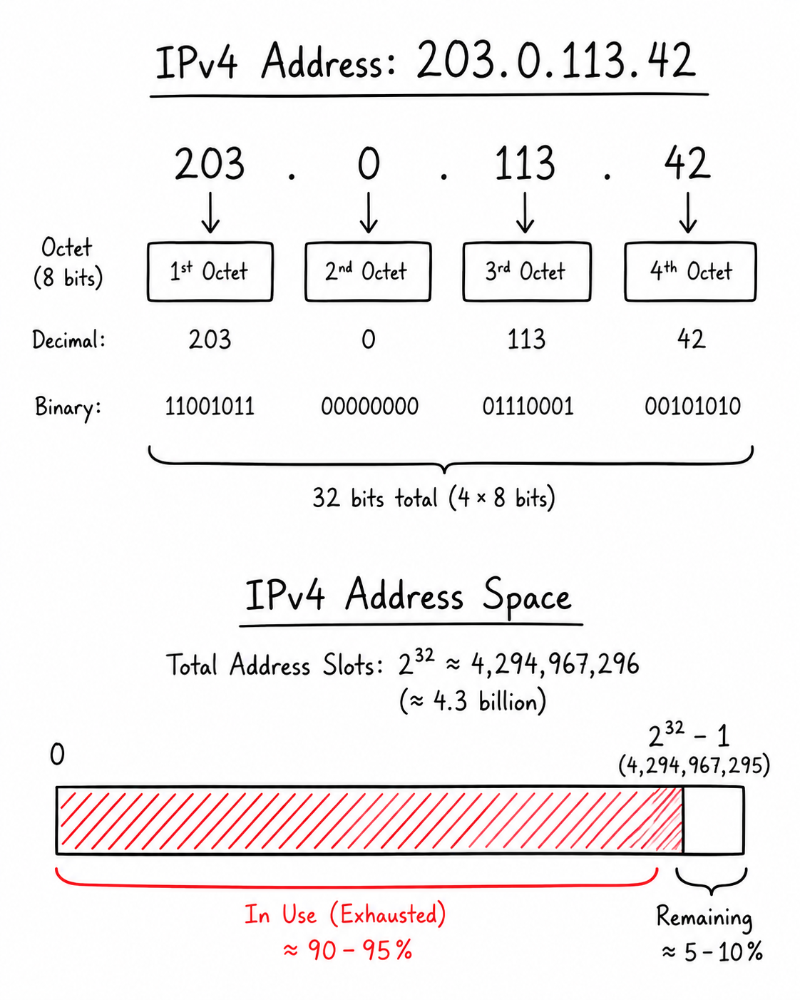
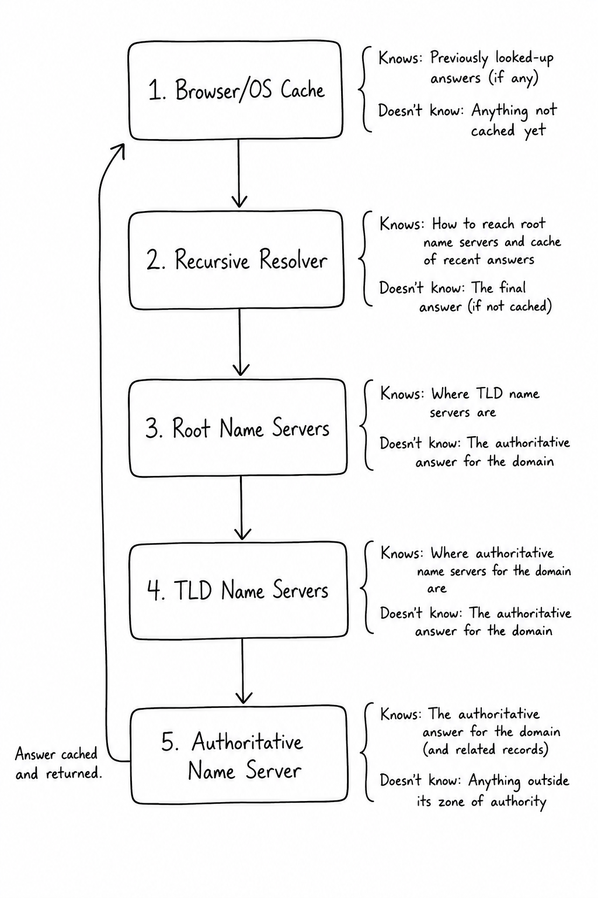
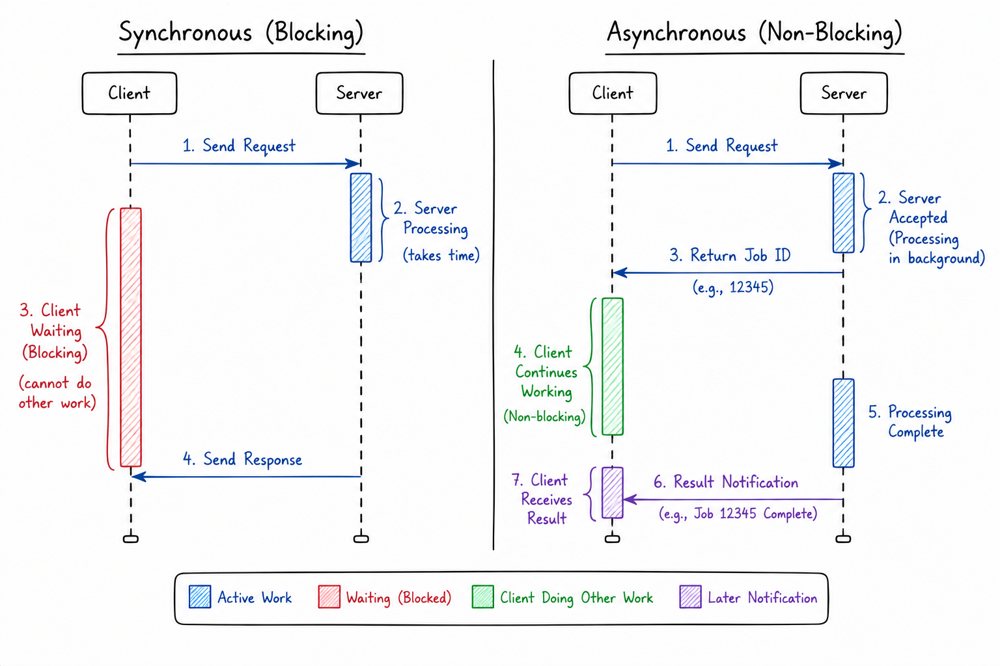
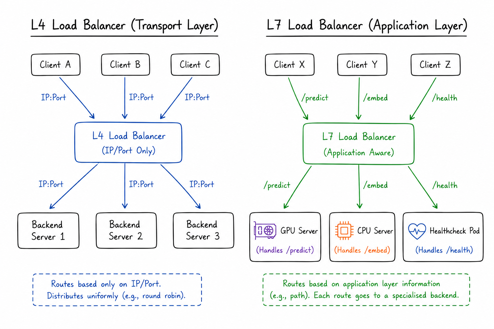
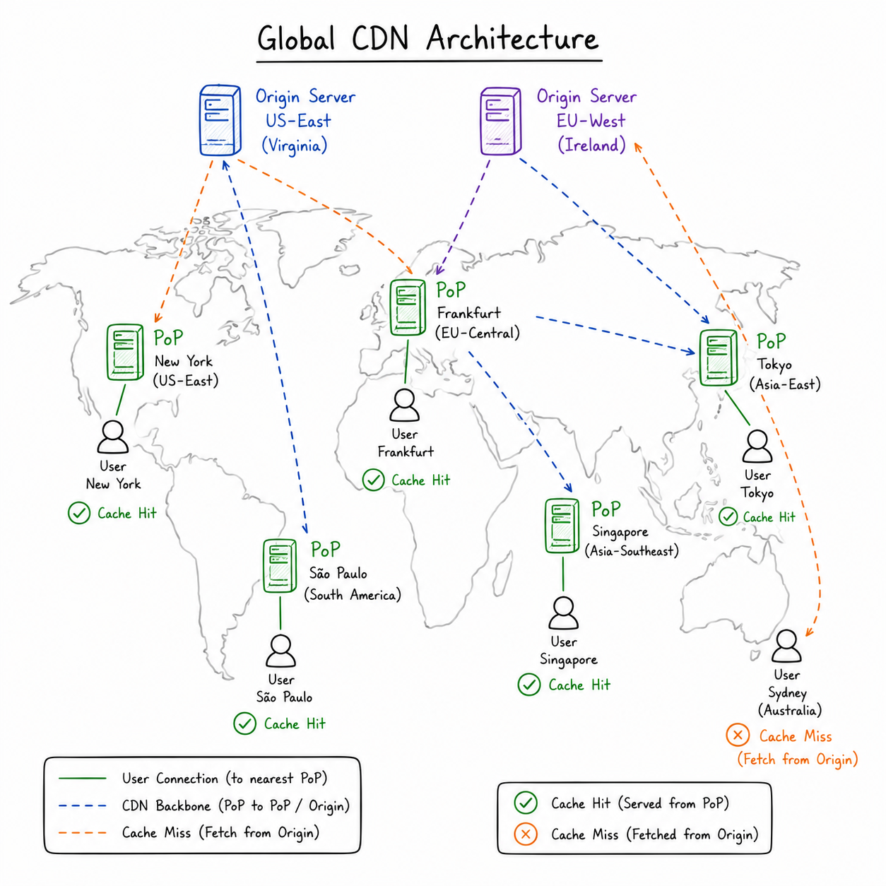

There's a quiet assumption baked into most early data science education: that data arrives cleanly, APIs respond politely, and the infrastructure beneath your Python notebook is someone else's problem. This is a beautiful lie, and the industry has a reliable way of dispelling it — usually in production, usually under load, and usually when you least expect it.
The truth is that modern data science is increasingly inseparable from distributed systems. Whether you're building a real-time feature store, deploying an LLM inference endpoint, routing model traffic across regions, or debugging why your training job can't resolve the S3 bucket hostname, you are doing networking. You might as well do it knowingly.
This post unpacks the core networking concepts that underpin modern system design — grounded in fundamentals, but with an eye toward the scenarios a working data scientist will actually encounter.
IP Addresses — The Postal System of the Internet
Before any two machines can talk, they need to know where each other lives. IP addresses are that location — not a human-readable name, but a numeric identifier that routing machinery uses to find a host.
IPv4: The Aging Workhorse
IPv4 has been running the internet since before most of us were writing code. It encodes addresses in 32 bits, yielding roughly 4.3 billion unique values — which sounds like a lot until you consider that there are 8 billion people, each with multiple connected devices, and that cloud providers spin up and tear down thousands of instances an hour.
The format you've seen everywhere: 192.168.1.1 — four decimal numbers between 0 and 255, separated by dots. Each number is one 8-bit octet, and together they form the 32-bit address.
The consequences of this scarcity are real and shape system design to this day: Network Address Translation (NAT) allows multiple private machines to share a single public IP, subnetting carves address space carefully, and data centers must apply to registries to get address allocations at scale.

IPv6: The Long-Awaited Upgrade
IPv6 expands the address space to 128 bits — which gives us approximately 3.4 × 10³⁸ unique addresses. To put it differently: there are enough IPv6 addresses to give every atom on Earth's surface its own address, several times over. Address scarcity is simply not a concern at this scale.
IPv6 addresses look like this: 2001:0db8:85a3:0000:0000:8a2e:0370:7334. The colon-separated hexadecimal notation is less immediately readable, but that's a small price for essentially unlimited namespace.
Two practical points worth internalising:
- IPv6 brings IPsec more naturally into the picture. While IPsec is not "automatic" in the magic sense, the standards around IPv6 were designed with network-layer security as a first-class concern — a meaningful shift from the bolt-on security posture of IPv4.
- Dual-stack deployments are the norm in transition. Most cloud and enterprise systems run both IPv4 and IPv6 simultaneously for a period, which has its own complexity cost.
Public vs. Private: Visibility Determines Architecture
Orthogonal to the version question is a visibility question: is this address reachable from the open internet, or only from within a private network?
Public IP → Globally unique, assigned by ISP or cloud provider
→ Internet-routable, directly accessible
→ Example: your EC2 instance's elastic IP
Private IP → Used within LANs, data centers, cloud VPCs
→ Not routable on the public internet
→ Example: 10.0.0.5 inside a Kubernetes cluster
→ Requires NAT or VPN to reach from outsideFor data science infrastructure, this distinction matters practically. Your training cluster nodes almost certainly talk to each other using private IPs inside a VPC. The API endpoint your model serves on — that needs a public IP (or a load balancer with one). Misconfiguring this is a very common source of connectivity bugs.
DNS — The Internet's Phonebook
You type api.mycompany.com into a request. Somewhere, a machine figures out this means 203.0.113.42. How?
That process is DNS — the Domain Name System — and it's a masterclass in distributed, cached, hierarchical lookup. Understanding it well will save you hours of debugging.
The Resolution Journey
When a DNS lookup happens, it follows a specific chain:
[Your Browser/App]
|
▼
[1. Local Cache Check] ← Browser cache, then OS cache
(TTL still valid? → Return immediately. Done.)
|
▼
[2. Recursive Resolver] ← Usually your ISP's or a cloud provider's (e.g., 8.8.8.8)
(Has it cached the answer? → Return. Otherwise, start climbing.)
|
▼
[3. Root Name Servers] ← "I don't know api.mycompany.com, but I know where .com lives"
|
▼
[4. TLD Name Servers] ← "I don't know api.mycompany.com, but mycompany.com's
authoritative servers are at X"
|
▼
[5. Authoritative Name Server] ← "api.mycompany.com → 203.0.113.42. There you go."
|
▼
[Answer propagates back up, cached at each layer, and returned to you]
The key design insight: DNS is hierarchical delegation. No single server knows everything. Instead, the system delegates responsibility progressively — the root knows the TLDs, TLDs know the authoritative servers, authoritative servers know the actual records. This is how DNS scales to billions of queries daily without centralised bottlenecks.
Recursive vs. Authoritative: Two Very Different Jobs
These two server types are often confused, but they have fundamentally different roles:
- A recursive resolver is a generalist. It doesn't own data; it chases referrals until it finds an answer, then caches it. It works for the client.
- An authoritative server is a specialist. It owns the definitive zone records for a domain. When you update a DNS record in your domain registrar, you're changing what the authoritative server says.
TTL: The Freshness Dial
Every DNS record has a Time-To-Live (TTL) — a number of seconds after which cached copies must be discarded and re-fetched. This is one of the most operationally significant knobs in distributed system design.
- Low TTL (e.g., 60 seconds): changes propagate quickly; high query load on authoritative servers.
- High TTL (e.g., 86400 = 1 day): very efficient caching; but if you update a record, stale clients will keep hitting the old destination for up to a day.
The practical implication: if you're migrating a service from one IP to another, reduce the TTL well in advance — at least 24 hours before the change. This is a lesson most engineers learn the hard way.
DNS Threats: Not Just an Academic Concern
DNS is a critical attack surface. The three major threat classes to know:
- Spoofing / Cache Poisoning: An attacker injects a fraudulent DNS record into a resolver's cache, redirecting users to a malicious server — one that might look like yours.
- DDoS: DNS infrastructure can be flooded with queries to make a domain unreachable, or DNS servers can be used as amplifiers for larger attacks (since DNS responses are typically larger than requests).
- MITM (Man-in-the-Middle): On-path attackers can intercept DNS queries and return tampered responses.
DNSSEC is the response to spoofing, adding cryptographic signatures to records. For ML systems that pull model weights from remote registries or route traffic through DNS-based service discovery, these threats are very real.
The Client-Server Model — Sync, Async, Stateful, Stateless
The client-server model is so fundamental it's almost invisible — until it isn't. A client sends a request; a server processes and responds. Simple. But the how of that exchange produces radically different systems depending on two choices: synchronous vs. asynchronous, and stateless vs. stateful.
Synchronous vs. Asynchronous
Synchronous (blocking):
Client: → Request → [waits...] → receives Response → continues
Server: processes → responds
Asynchronous (non-blocking):
Client: → Request → [continues doing other things] → callback/event fires later
Server: processes at its own pace → notifies or stores resultIn synchronous communication, every request blocks the caller until the server replies. This is simple to reason about — think of a standard REST API call — but it creates tight coupling. If the server is slow, the client stalls.
Asynchronous communication decouples the production of a result from its consumption. The canonical pattern for ML systems is a job queue: a client submits an inference request, gets a job ID immediately, and polls (or subscribes to a webhook) to retrieve results later. This architecture is essential for long-running workloads — training jobs, large batch inference, or anything where you simply can't afford to hold a connection open for minutes.

Stateless vs. Stateful: The Scaling Dimension
This is perhaps the most consequential architectural decision in backend design:
| Stateless | Stateful | |
|---|---|---|
| Server memory | None between requests | Session context retained |
| Scaling | Easy — any node can handle any request | Hard — client must reach same node |
| Resilience | A node failure is transparent | A node failure may lose session |
| Caching | Highly cacheable | Tricky |
| Examples | REST APIs, model inference endpoints | WebSocket sessions, multi-turn LLM chat with memory |
The dominant pattern for scalable ML serving is stateless. Each inference request carries all the context needed (the input, auth token, parameters), and any backend replica can handle it. This is why horizontal scaling feels "natural" for REST-based ML APIs.
Where stateful design becomes relevant in ML: streaming inference with state (e.g., an LLM generating tokens step by step), long-lived agent sessions, or any interaction where the model needs conversational history that isn't re-sent on every call.
Proxies — The Invisible Intermediaries
Proxies sit between communicating parties and act on their behalf. They're one of those concepts that feels abstract until you see how pervasively they appear in real deployments. There are two fundamental orientations:
Forward Proxy: Acting for the Client
A forward proxy sits between client devices and the internet. Clients talk to the proxy; the proxy talks to the destination. The destination server may never see the original client's IP.
Use cases:
- Corporate filtering: block certain categories of outbound traffic
- Privacy / anonymity: hide client IPs from external services
- Caching outbound requests: in ML, this can accelerate repeated pulls from package repositories or dataset mirrors
The forward proxy knows who the client is, but the outside world doesn't.
Reverse Proxy: Acting for the Server
A reverse proxy sits in front of your backend servers. External clients talk to the proxy, which routes to the actual servers. The clients may not even know multiple backend servers exist.
[ User Browser ] ==== HTTPS ====> [ Reverse Proxy ] ---- HTTP ----> [ Backend Server A ]
\---- HTTP ----> [ Backend Server B ]
\---- HTTP ----> [ Backend Server C ]A reverse proxy is doing several things simultaneously:
- TLS/SSL termination: It handles the encrypted handshake with the client, then communicates with backends over simpler (often unencrypted) internal HTTP. This centralises certificate management — you renew certs in one place.
- Load balancing: It distributes incoming requests across backends (more on this shortly).
- Security perimeter: It shields the actual server IPs from the public internet.
In ML deployments, Nginx and Envoy are classic reverse proxies. Kubernetes's ingress controller is effectively a reverse proxy for your pods. Knowing this mental model makes reading Kubernetes configs far less mysterious.
Load Balancing — Scaling Without Bottlenecks
Once traffic outgrows a single server, load balancing becomes the mechanism by which work is distributed across a fleet. But "distribute traffic" is far too vague — the how depends critically on which layer of the stack you're operating at, and which algorithm you use.
Layer 4 vs. Layer 7: Where Does the Balancer Look?
OSI Model (simplified):
Layer 7 — Application (HTTP, gRPC, headers, paths, cookies)
...
Layer 4 — Transport (TCP/UDP, IP:port pairs)
...Layer 4 balancing operates on TCP/UDP information only. It sees source/destination IPs and ports. It's fast and simple — great for raw throughput and when you don't need to inspect what's inside the packet.
Layer 7 balancing understands application-level protocols. It can route based on:
- URL path (
/v1/predict→ GPU cluster,/health→ lightweight pod) - HTTP headers (route by API version, tenant ID, or
Content-Type) - Cookies (affinity to a specific backend)
For ML serving, Layer 7 is almost always the right choice. Different model versions, different hardware tiers, A/B experiment traffic splits — these are routing decisions that require HTTP context.

Load Balancing Algorithms: Choosing Who Gets the Next Request
| Algorithm | How It Works | Best When |
|---|---|---|
| Round Robin | Requests cycle sequentially across servers | All servers are similar; requests are roughly equal in cost |
| Least Connections | Route to the server with fewest active connections | Request durations vary widely (some fast, some slow) |
| IP Hashing | Hash the client IP → always same server | You need weak session affinity (but watch out for NAT skew) |
| Weighted | Assign bigger share to more powerful servers | Your fleet has heterogeneous capacity (e.g., a mix of GPU types) |
For ML inference clusters, weighted balancing is often the most natural fit — if you have A100s and T4s in the same pool, they should not receive the same traffic volume.
API Gateway — The Front Door for Traffic
An API gateway is a centralised entry point that receives all client API calls, applies shared policy, and routes to backend services. It's what makes microservice architectures tractable.
Think of it as infrastructure middleware that acts as a reverse proxy by routing client requests to backend servers, but it goes far beyond simple traffic forwarding. Without a gateway, every microservice independently handles authentication, rate limiting, versioning, and logging. That's an enormous surface area for inconsistency. With a gateway, those concerns are pushed to the edge, and services can focus on their own logic.
Key functions of an API gateway:
Rate Limiting & Throttling — caps the request rate from a given client, protecting backends from overload or abuse. In ML APIs, this is critical: inference endpoints are expensive, and a single misconfigured client can saturate your GPU fleet.
Request Transformation — rewrites paths, headers, or payloads before forwarding to the backend. This decouples your external API contract from internal service formats. You can evolve one without breaking the other.
Composition & Aggregation — the gateway can stitch together calls to multiple backend services into a single response for the client. This is particularly useful in LLM-powered applications where a single user query might trigger calls to a retrieval service, a reranker, and a generator — the gateway presents a clean unified API over this pipeline.
Client Request: POST /ask
|
▼
[API Gateway]
├── Auth check
├── Rate limit check
├── Route to:
│ ├── Retrieval Service (finds docs)
│ ├── Reranker Service (scores docs)
│ └── LLM Service (generates answer)
└── Aggregate responses → single JSON to clientAWS API Gateway, Kong, and Apigee are the common implementations you'll encounter in practice.
CDNs — Putting Your Data at the Edge of the World
A Content Delivery Network is a geographically distributed fleet of edge servers (called Points of Presence, or PoPs) that cache and serve content close to users. The physics are simple: fewer kilometres between client and server means fewer milliseconds of latency.
The Cache Hit / Cache Miss Dynamic
When a user requests content:
- Cache hit: The edge server has the content cached and responds immediately. Origin never involved.
- Cache miss: The edge doesn't have it; it fetches from the origin (or a mid-tier cache), stores the result, and serves it. Future requests to the same PoP will hit.
Cache hit rate is the central performance metric of a CDN. A 95% hit rate means 95% of requests never touch your origin — dramatic reductions in origin load, bandwidth costs, and latency.

Geo-Based Routing
CDNs pair caching with geographic routing — DNS or Anycast mechanisms that resolve a user's request to the nearest (or most appropriate) PoP. This is relevant for ML applications in several non-obvious ways:
- Model weight distribution: Some inference frameworks (like TensorFlow Serving, or Triton clients) pull model weights on startup. If you're deploying globally, a CDN can serve those weight files from edge nodes instead of a single origin bucket.
- Static asset acceleration: Dashboards, front-ends for ML tools, Jupyter notebook servers — all benefit from CDN-cached assets.
- Data residency: Geo-routing can be configured to keep certain data within a region, which matters for GDPR and similar compliance frameworks.
Putting It All Together: What a Request Actually Does
Let's trace a single API call to a deployed ML model — end to end — through every layer we've covered:
1. User types: https://api.mycompany.com/v1/predict
│
2. DNS Resolution │ Browser checks local cache → miss
│ Recursive resolver → Root → TLD → Authoritative
│ Returns: 203.0.113.42 (CDN edge node IP)
▼
3. CDN Edge (PoP) Request arrives at nearest edge server
Static response? → Cache hit, serve immediately.
Dynamic API call? → Forward to origin.
│
▼
4. API Gateway Auth token validated
Rate limit checked
Request transformed / enriched
Routed to: /v1/predict → ML Serving cluster
│
▼
5. Load Balancer (L7) Routes to the least-loaded GPU cluster
(Weighted, because you have A100s and T4s)
│
▼
6. Reverse Proxy TLS terminated upstream (at CDN or Gateway)
Handles fine-grained internal routing
Performs protocol translation
(e.g HTTP/3 → gRPC)
Request forwarded to backend pod
│
▼
7. ML Model Server Inference runs; JSON response returned
▲
│ (Response travels back up the same chain)Every layer has a reason to exist. Every layer is a potential failure point, a tuning dial, and an observability boundary.
Closing Thoughts
Networking is not glamorous. It doesn't make it into conference talks the way transformers or diffusion models do. But it is the connective tissue of every system that actually ships, scales, and serves real users.
The concepts here — IP addressing, DNS resolution, proxies, load balancing, API gateways, CDNs — are not deep computer science research. They are engineering primitives, the kind that a good data scientist should understand well enough to read architecture diagrams fluently, ask the right questions in system design discussions, and debug the right layer when something breaks in production.
The goal was never to make you a network engineer. It was to make the infrastructure beneath your models legible — so that when a deployment behaves strangely, you know where to look.